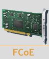
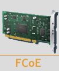

Open-FCoE software target
 Open-FCoE is an open source project implementing the Fibre Channel over Ethernet for Linux. It uses SCST framework to implement software FC target.
 Open-FCoE is an open source project implementing the Fibre Channel over Ethernet for Linux. It uses SCST framework to implement software FC target.